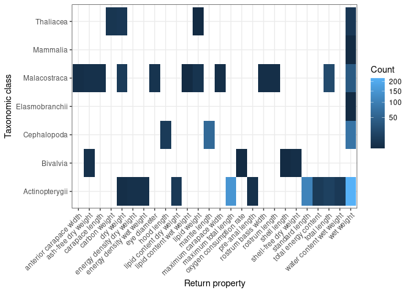

Overview
This R package provides allometric equations that relate the body size of Southern Ocean taxa to their body part measurements. It is a component of the Southern Ocean Diet and Energetics Database project.
Packaged equations
The package currently includes 785 equations, covering mostly cephalopods and fish. A breakdown of the number of equations by taxonomic class and the allometric property that they estimate:

Installing
install.packages("devtools")
library(devtools)
install_github("SCAR/solong")Usage
Let’s say we have some measurements of Architeuthis dux squid beaks:
x <- tibble(LRL = c(11.3, 13.9), species = "Architeuthis dux")
x
#> # A tibble: 2 x 2
#> LRL species
#> <dbl> <chr>
#> 1 11.3 Architeuthis dux
#> 2 13.9 Architeuthis duxIt doesn’t matter what the column names are, but we do need to set the properties of the columns so that solong can find the appropriate data to use in each allometric equation. Here we’ve measured lower rostral length, so:
x$LRL <- sol_set_property(x$LRL, "lower rostral length")Now we can apply allometric equations to our data. What equations do we have available for our species of interest?
sol_equations() %>% dplyr::filter(taxon_name == "Architeuthis dux") %>% summary
#> equation_id: 342218_ML_Clar1986
#> taxon_name: Architeuthis dux, taxon_aphia_id: 342218
#> equation: function (...) tibble(allometric_value = -55.6 + 59.31 * ...)
#> It takes as 1st input: lower rostral length (units: mm, sample range: unknown to unknown)
#> It estimates: mantle length (units: mm)
#> Indicator of reliability: N=11
#> Reference: Clarke MR (1986). "A handbook for the identification of cephalopod
#> beaks. Clarendon Press, Oxford." As cited in Xavier J & Cherel Y (2009
#> updated 2016) Cephalopod beak guide for the Southern Ocean. Cambridge,
#> British Antarctic Survey, 129pp.
#>
#> equation_id: 342218_WW_Clar1986
#> taxon_name: Architeuthis dux, taxon_aphia_id: 342218
#> equation: function (...) tibble(allometric_value = exp(-1.773 + 4.57 * log(...)))
#> It takes as 1st input: lower rostral length (units: mm, sample range: unknown to unknown)
#> It estimates: wet weight (units: g)
#> Indicator of reliability: N=9
#> Reference: Clarke MR (1986). "A handbook for the identification of cephalopod
#> beaks. Clarendon Press, Oxford." As cited in Xavier J & Cherel Y (2009
#> updated 2016) Cephalopod beak guide for the Southern Ocean. Cambridge,
#> British Antarctic Survey, 129pp.
#>
#> equation_id: 342218_ML_Roel2000
#> taxon_name: Architeuthis dux, taxon_aphia_id: 342218
#> equation: function (...) tibble(allometric_value = 10^((.../11.2) + 1.723214286))
#> It takes as 1st input: lower rostral length (units: mm, sample range: 1 to 19.5)
#> It estimates: mantle length (units: mm)
#> Indicator of reliability: N=43
#> Notes: Noted by Xavier & Cherel: this equation for mantle_length from LRL might be better than the Clarke (1986) one
#> Reference: Roeleveld MAC (2000). "Giant squid beaks: implications for
#> systematics." _Journal of the Marine Biological Association of the UK_,
#> *80*, 185-187.Here we use the equation with ID 342218_ML_Roel2000, which is from Roeleveld (2000) and gives the mantle length of Architeuthis dux based on the lower rostral length.
This equation can be applied to to all rows:
sol_allometry(x, "342218_ML_Roel2000")
#> # A tibble: 2 x 6
#> LRL species allometric_value allometric_value_l… allometric_value_u…
#> [mm] <chr> [mm] [mm] [mm]
#> 1 11.3 Architeuthis… 539.6881 NA NA
#> 2 13.9 Architeuthis… 921.0553 NA NA
#> # … with 1 more variable: allometric_property <chr>Or we can apply a different equation to each row. Here we could use different allometric equations for mantle length:
xa <- sol_allometry(x, c("342218_ML_Roel2000", "342218_ML_Clar1986"))
xa
#> # A tibble: 2 x 6
#> LRL species allometric_value allometric_value_l… allometric_value_u…
#> [mm] <chr> [mm] [mm] [mm]
#> 1 11.3 Architeuthis… 539.6881 NA NA
#> 2 13.9 Architeuthis… 768.8090 NA NA
#> # … with 1 more variable: allometric_property <chr>The allometric_value column contains the values that have been estimated, and the allometric_property column gives the name of the property that has been estimated.
We can also see that the returned allometric_value is of that specific property, with appropriate units:
sol_get_property(xa$allometric_value)
#> [1] "mantle length"
units(xa$allometric_value)
#> $numerator
#> [1] "mm"
#>
#> $denominator
#> character(0)
#>
#> attr(,"class")
#> [1] "symbolic_units"Details
We can apply equations that use different inputs, provided that they estimate the same output property. For example, equation 342218_WW_Clar1986 estimates the body weight of the squid Architeuthis dux based on lower rostral length measurements:
sol_equation("342218_WW_Clar1986") %>% summary
#> equation_id: 342218_WW_Clar1986
#> taxon_name: Architeuthis dux, taxon_aphia_id: 342218
#> equation: function (...) tibble(allometric_value = exp(-1.773 + 4.57 * log(...)))
#> It takes as 1st input: lower rostral length (units: mm, sample range: unknown to unknown)
#> It estimates: wet weight (units: g)
#> Indicator of reliability: N=9
#> Reference: Clarke MR (1986). "A handbook for the identification of cephalopod
#> beaks. Clarendon Press, Oxford." As cited in Xavier J & Cherel Y (2009
#> updated 2016) Cephalopod beak guide for the Southern Ocean. Cambridge,
#> British Antarctic Survey, 129pp.And equation 195932_WW_GaBu1988 estimates the weight of male Weddell seals based on their standard length:
sol_equation("195932_WW_GaBu1988") %>% summary
#> equation_id: 195932_WW_GaBu1988
#> taxon_name: Leptonychotes weddellii, taxon_aphia_id: 195932
#> equation: function (...) tibble(allometric_value = 3.66 * ... - 489.3)
#> It takes as 1st input: standard length (units: cm, sample range: 170 to 236)
#> It estimates: wet weight (units: kg)
#> Indicator of reliability: N=15
#> Notes: Applies to male animals
#> Reference: Gales NJ, Burton HR (1988). "Use of emetics and anaesthesia for dietary
#> assessment of Weddell seals." _Australian Wildlife Research_, *15*,
#> 423-433.Note that this equation estimates weight in kg, whereas 342218_WW_Clar1986 estimates weight in g. We can apply the two equations together to a single data set:
x <- tibble(LRL = c(11.3, NA_real_),
species = c("Architeuthis dux", "Leptonychotes weddellii"),
SL = c(NA_real_, 175)) %>%
mutate(LRL = sol_set_property(LRL, "lower rostral length"),
SL = sol_set_property(SL, "standard length", "cm"))
xa <- sol_allometry(x, c("342218_WW_Clar1986", "195932_WW_GaBu1988"))
xa %>% dplyr::select(species, allometric_property, allometric_value)
#> # A tibble: 2 x 3
#> species allometric_property allometric_value
#> <chr> <chr> [g]
#> 1 Architeuthis dux wet weight 11029.72
#> 2 Leptonychotes weddellii wet weight 151200.00The output values are of property “wet weight” and have all been provided in g (because the output column allometric value must have a single set of units):
sol_get_property(xa$allometric_value)
#> [1] "wet weight"
units(xa$allometric_value)
#> $numerator
#> [1] "g"
#>
#> $denominator
#> character(0)
#>
#> attr(,"class")
#> [1] "symbolic_units"If we try to apply equations that estimate different properties, we will get a warning:
x <- tibble(LRL = c(11.3, 13.9), species = "Architeuthis dux") %>%
mutate(LRL = sol_set_property(LRL, "lower rostral length"))
xa <- sol_allometry(x, c("342218_ML_Roel2000", "342218_WW_Clar1986"))
xa %>% dplyr::select(species, allometric_property, allometric_value)
#> # A tibble: 2 x 3
#> species allometric_property allometric_value
#> <chr> <chr> <dbl>
#> 1 Architeuthis dux mantle length 540.
#> 2 Architeuthis dux wet weight 28417.And while the allometric_property column still says which property was estimated for each row, the property type and units of the returned allometric_value will not be set, because they are not consistent across the different equations:
sol_get_property(xa$allometric_value)
#> character(0)Missing information
What happens if we don’t have the required information in our data to use a particular equation? The 234631_SL~OL_WiMc1990 equation is for fish length, and requires otolith length (not present in our test data).
tryCatch(
sol_allometry(x, "234631_SL~OL_WiMc1990"),
error = function(e) conditionMessage(e)
)
#> [1] "could not find required input properties (otolith length) in data"Reliability of equations
Most equations have been published with the number of samples used to fit the equation (N) and the resulting goodness-of-fit of the equation to the data (R^2). These two quantities (if provided by the original source) can be found in the reliability component of an equation, and can be used to help decide if a given equation is appropriate for your data.
Some equations, typically from more recent publications, also provide the standard errors of the coefficients (or similar information) and thereby allow the allometric_value_lower and allometric_value_upper values to be estimated (the upper and lower bounds on the estimate). These should give a more reliable indicator of the precision of the estimated quantities.
x <- tibble(TL = 10 %>% sol_set_property("carapace length", with_units = "mm"))
sol_allometry(x, "369214_WW_Lake2003") %>%
dplyr::select(allometric_value, allometric_value_lower, allometric_value_upper)
#> # A tibble: 1 x 3
#> allometric_value allometric_value_lower allometric_value_upper
#> [g] [g] [g]
#> 1 0.8919773 0.6986516 1.138799Attempts are made to avoid allowing an equation to extrapolate beyond its valid input data range. Some equations will explicitly return NA results for such inputs. The inputs component of the equation may also hold information about the range of the inputs used to fit the equation, which may help assess whether your data lie within its valid range.
Other sources of equations
http://www.fishbase.org provides estimates of length-weight coefficients. These can be obtained via the sol_fb_length_weight() function (which uses the rfishbase package under the hood). For example:
myeq <- sol_fb_length_weight("Electrona antarctica", input_properties = "standard length")
summary(myeq)
#> equation_id: fishbase::11437
#> taxon_name: Electrona antarctica, taxon_aphia_id: 217697
#> equation: function (L) tibble(allometric_value = 0.00742 * (L^3.27))
#> It takes as 1st input: standard length (units: cm, sample range: unknown to unknown)
#> It estimates: wet weight (units: g)
#> Indicator of reliability: R^2=0.957
x <- tibble(SL = 10) %>%
mutate(SL = sol_set_property(SL, "standard length", with_units = "cm"))
sol_allometry(x, myeq)
#> # A tibble: 1 x 5
#> SL allometric_value allometric_value… allometric_value… allometric_prop…
#> [cm] [g] [g] [g] <chr>
#> 1 10 13.81669 NA NA wet weightAdding your own equations
TODO: document, including what to do when a property is not part of the sol_properties() collection.
Taxonomy
Equations are registered against taxon_name and taxon_aphia_id (the species identifier in the World Register of Marine Species). The taxon_aphia_id may be more reliable than species names, which can change over time. Users might like to look at the worrms package for interacting with the World Register of Marine Species.
Other random stuff
Is equation X included in the package? Call sol_equations() to get all equations that are part of the package, and have a rummage through that.
To see the references from which equations have been drawn, do something like:
eqs <- sol_equations()
## the first few
head(unique(eqs$reference))
#> [[1]]
#> Clarke MR (1986). "A handbook for the identification of cephalopod
#> beaks. Clarendon Press, Oxford." As cited in Xavier J & Cherel Y (2009
#> updated 2016) Cephalopod beak guide for the Southern Ocean. Cambridge,
#> British Antarctic Survey, 129pp.
#>
#> [[2]]
#> Roeleveld MAC (2000). "Giant squid beaks: implications for
#> systematics." _Journal of the Marine Biological Association of the UK_,
#> *80*, 185-187.
#>
#> [[3]]
#> Lu CC, Williams R (1994). "Contribution to the biology of squid in the
#> Prydz Bay region, Antarctica." _Antarctic Science_, *6*, 223-229. doi:
#> 10.1017/S0954102094000349 (URL:
#> https://doi.org/10.1017/S0954102094000349).
#>
#> [[4]]
#> Rodhouse PG, Prince PA, Clarke MR, Murray AWA (1990). "Cephalopod prey
#> of the grey-headed albatross Diomedea chrysostoma." _Marine Biology_,
#> *104*, 353-362. doi: 10.1007/BF01314337 (URL:
#> https://doi.org/10.1007/BF01314337), As cited in Xavier J & Cherel Y
#> (2009 updated 2016) Cephalopod beak guide for the Southern Ocean.
#> Cambridge, British Antarctic Survey, 129pp.
#>
#> [[5]]
#> Clarke M (1962). "The identification of cephalopod "beaks" and the
#> relationship between beak size and total body weight." _Bulletin of the
#> British Museum of Natural History B_, *8*, 421-480. As cited in Xavier
#> J & Cherel Y (2009 updated 2016) Cephalopod beak guide for the Southern
#> Ocean. Cambridge, British Antarctic Survey, 129pp.
#>
#> [[6]]
#> Lu CC, Ickeringill R (2002). "Cephalopod beak identification and
#> biomass estimation techniques: tools for dietary studies of southern
#> Australian finfishes." _Museum Victoria Science Reports_, *6*, 1-65.More examples
Grab all equations from Eastman (2019):
eq <- sol_equations() %>% dplyr::filter(grepl("East2019", equation_id)) %>%
## some equations have been included twice with different species names - drop the duplicates
dplyr::filter(!grepl("Accepted taxon name", notes))Reproduce Figure 2 from that paper:
## extract each maximum length
max_lengths <- sapply(eq$equation, function(z) z()$allometric_value)
## histogram
hist(max_lengths, 20)